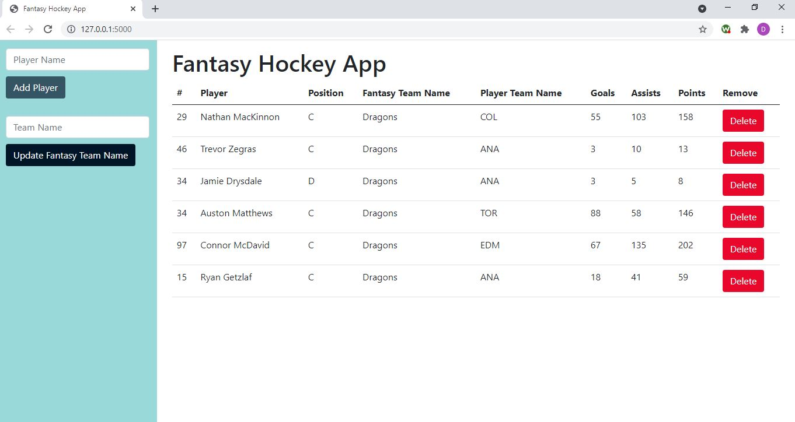

Self Assessment

The computer science program at Southern New Hampshire University has taught me many skills that I can leverage in my professional career, but there are a few that stand out as what I believe to be most useful.
I really enjoyed my CS 260 class, Data Structures and Algorithms, because I learned that data structures are used in almost everything when it comes to computer science. Learning about the different types of data structures such as vectors, hash-tables, and tree structures was also valuable. In that class I learned about algorithms and the different concepts in search, sort, and hash/chaining algorithms. Algorithms are very useful when it comes to computer security as well especially hash/chaining because they produce many one-time keys from a single key or password. Algorithms for computer security are needed in order to protect information confidentiality, integrity, and availability. I learned in CS 260 that hash algorithms improve confidentiality and data structures improve data availability. From CS 305, Software Security, I learned that testing algorithms improves data integrity.
Overall data structures help us manage data efficiently and algorithms use those data structures to help us solve problems. Without them we would have a large amount of unnecessary, unsecure, and inefficient code that would make a difficult experience for both the developer and the user. From what I learned in that course I believe I can setup the structure to build any program efficiently that I am tasked with.
My Collaboration and Group Project course, CS 310, was also useful in understanding how to use Git. I learned the benefits of version control and how it can be a channel of communication between colleagues. The ability to share and trace code changes is a huge benefit when working with team members. The improved communication and visibility can lead to a more productive team and helps ensure there are not different versions of the same project being worked on. The detailed history and changelog are very useful as well as the ability to revert to a previous version. In some cases, it may be easier to revert to a previous version rather than undo unwanted changes manually. That class taught me the benefits of Git and how it is a convenient platform to use when working on any individual or group project.
I also want to touch on other classes that I believe will be beneficial in my career. I learned the fundamentals in programming languages such as Python, C++, Java, and C#. My CS 250 course taught me about Scrum and CS 305 about testing techniques and software security. I also learned Discrete Math, Physics, Artificial Intelligence, and Machine Learning and how they relate to computer science. I have learned so much during my time at Southern New Hampshire University and I am excited to apply that knowledge to my own personal and professional projects in the future.
I chose projects I enjoyed working on for my final project. I wanted to choose projects that were challenging and would also be beneficial for my future career.
For the software design and engineering portion of my project, I chose to apply enhancements to my CS 330 final project. In that class I learned how to 3D model objects, change views (zoom in or zoom out) of those objects, and apply keyboard and mouse interactions to move the view of an object in C++. For my enhancement of this project, I decided to learn how to apply the same functionality in Python rather than C++. I did this to demonstrate my skills in software design and engineering by being able to create the same project in a different programming language. This was a difficult enhancement but rewarding as I was able to learn how to create 3D model objects and different views of those objects using Python. Until this project, I have never done anything like that in Python before.
For the algorithms and data structures portion of my project, I chose to apply enhancements to my CS 340 final project. In that class I learned how to build a database in MongoDB and perform CRUD functions to create and manipulate databases. I chose to enhance this project by creating an NHL fantasy hockey web app. Through the web app the user is able to perform CRUD operations by clicking buttons. I had very little previous experience with web development, but from the little experience I did have I remembered that I had a lot of fun with it. I took the skills I learned in my CS 340 course to create the back end of the app in Python. It took me awhile to learn how to send a delete operation from a button click in HTML. I was able to conquer that challenge and now I can say that I have experience in HTML and CSS and that I have the ability to use Python to create an effective web app.
For the databases portion of my project, I chose to apply enhancements to my DAD 220 final project. I learned how to create structured database environments that give me the functionality to perform data manipulation and data analysis through queries in SQL. For the enhancement of this project, I decided to web scrape NHL data using Python then in SQL I used that data to create multiple tables, group my data, apply if then logic, order, and join data using SQL statements I learned from my DAD 220 course. The enhancement for this portion of the project was a lot of fun and since I am a hockey nerd, I saw an opportunity to combine my knowledge of Python, SQL, and hockey so I took it. In my enhancement I learned how to web scrape data using Python and improved my SQL skills.
Enhancement 1
Narrative
The artifact I am using for my software design/engineering artifact is my CS 330 Final Project. For that project I used OpenGL (Open Graphics Library used for rendering 3D vector graphics) to create a 3D model of a chair in C++. I created this artifact in December 2020 when I was wrapping up my CS 330 class. I included this artifact in my ePortfolio because I enjoyed and felt challenged creating the 3D models in my CS330 class. I believe this artifact showcases my ability to create different 3D objects, to rotate them, and to take keyboard/mouse inputs to navigate the model as well. My enhancement for this artifact was to recreate it in a different programming language, Python. It was originally created in C++.
In Module One I did not meet the course objectives. I believe my enhancement ideas were not enough to classify as an enhancement for the project. I reread the requirements and noticed that recreating the project in a different programming language was a more ideal option. I enjoy using Python and thought it would be a good fit for me to make my enhancements in. At this point I think converting the project into Python will be enough to classify as an enhancement, but I will be awaiting feedback from my instructor.
Going into the enhancements, I started the process by looking up whether it was even possible to recreate my 3D chair model in Python. After doing some research, it appeared that there were PyOpenGL and pygame libraries I could take advantage of to create a similar 3D model. Up until this point, I did not know these libraires existed, so I was happy to get the chance to learn how to use them. I learned that the code in C++ and Python for this project are similar in the GL functions, but different in seemingly all other aspects. In my CSS330 class I learned how to create vertices to form a model and how to apply color to it. I also learned that OpenGL’s function translate defines where the model is located in relation to the center of the screen. I could use my navigate inputs into the translate function to move the model. In working on my enhancement, I discovered that there are preset definitions for the arrow keys. I used those because it makes more sense than using the “w”, “s”, etc keys to navigate.
One challenge I encountered was that the vertices array in my final project contained vertices as well as the colors, but in Python I had to define my vertices and colors separately. It is in my loop that I join the two to define which color each face is. Another challenge I faced was how to use the mouse to rotate the model. I implemented a mouse movement rotation that works and rotates based on how far away from the center of the screen the cursor is, but it took some tweaking to get that figured out. I would set the x and y rotation, but the chair would only rotate in the y direction. The glRotate function takes four variables, with the first being the angle, second being x rotate, third being y rotate, and fourth being z rotate. I was initially trying to set the angle variable only, which is why I was seeing issues. Once I corrected the variable inputs, the rotate started working. Through the enhancements of this project, I was able to increase my knowledge of 3D modeling in Python, something I wasn’t able to add to my resume until now.
Artifact 1 Code Review
Artifact & Enhancement 1 Code
Enhancement 2

Narrative
My artifact is my CS 340 Final Project that consisted of me creating a database in MongoDB and using CRUD operations in Python to manipulate it. It was created in February 2021 as my wrap up project for the class. I included this artifact in my ePortfolio because I have been interested in creating a website for some time and this gives me an opportunity to work on the front end (HTML) and backend (Python and MongoDB). The final project consisted of creating the API. I thought it would be a great opportunity to create HTML as the enhancement. I believe this artifact showcases my ability to create a database as well as manipulate data within that database (create, read, update, and delete). The artifact was improved by me taking those CRUD operations and applying them into a nicer looking user interface.
I did not meet my enhancement objectives in Module One. When I submitted Module One, I did not have my final project from CS 340, so I created a fairly simple program that I thought would work as an alternative. Since Module One however, I was able to recover my final project. From there I decided that my enhancement would be to create a user interface to the API creation. Specifically, I want to take the same NHL data that I will manipulate next week and bring it into my database. From there the user interface will be similar to a fantasy sports app. I added a button for each of the CRUD operations, so that when clicked the database would update accordingly.
The enhancement for this project was challenging and just getting set up took me some time. In my CS 340 class we had a MongoDB port already created for us so we could manipulate databases right away. For this project, I tried to create a MongoDB database in the cloud, however when I tried to connect to it, I was having problems. After some time, I decided to download MongoDB locally and create my database that way and it worked. I thought about the challenges connecting to the cloud and later realized that I never put my database name into the connection url (lesson learned). Once I had MongoDB connected it was simple to test my CRUD operations from there. One challenge that I faced though is that I have never built the connection between database and user interface, so the enhancement process was all new to me. In my research, it was apparent to me that I needed to use Flask (a micro web framework) in Python that would allow me to pass Python variables into HTML. Learning Flask and how to create routes was difficult to set up but after some time and practice I was able to catch on. I started with one datapoint in my database to perform my CRUD operations on. I first created it, then read it in, updated it, then deleted it, and I was able to get that to work. I added more data to the database and my operations were still working with my HTML variables, however when I added more than one button to the HTML I started to have some problems. I initially tried the request.method function to pass the request from the button to the database, but that was not working correctly after I added a second button. After more research I decided use the request.form function and passed a value in my button. By doing that I was able to pass the id of the record I was trying to update or delete.
Artifact 2 Code Review
Artifact & Enhancement 2 Code

Enhancement 3

Narrative
My database artifact is my DAD 220 Final Project that was created in 2018. In that project I created a table, updated, inserted, and deleted data from/into it. I included this artifact in my ePortfolio because I had a lot of fun manipulating data in SQL and learned a lot from the class. I thought it would be a great enhancement for this project to learn and expand my knowledge with different SQL statements. The artifact showcases my skills and abilities by highlighting how I can manipulate and join different types of data. This artifact was improved because I was able to pull data from the web as well as create and manipulate the data to add to my raw data set.
I have made improvements to my enhancement since Module One. I decided to scrape data from the web and manipulate the data using SQL queries. I chose to use GROUP BY and INNER JOIN statements to bring team wins into my large data set from the web data. An additional enhancement I think I will do is to group by player and have a player stats table that I can select.
In my enhancement I learned how to web scrape data and create multiple tables from different queries I created. For the SQL side of my enhancement, I had some issues creating multiple tables to start. I did not realize I needed a comma between tables using WITH and that was the error I was getting. That was an easy fix once I figured it out. I also had an issue with using the CASE statement to determine the winning team in my Results table. The issue I was running into for that statement was also syntax related as I forgot to add the END AS portion of it. At the end of the query, I create a NewData table and was not sure how to get all columns from one table when using a join. After some research I found that using the tablename.* syntax is the way to do it and that worked perfectly for what I needed.
I also ran into problems with the web scraping portion of my enhancement, but I was eventually able to resolve them. I had to convert the data into a pickle file in order to parse through it. There might be a better way to do this, but I was able to make this work for what I needed. From there I looped through the json text and pulled the data I wanted from it. I treated the text as a dictionary to get my key, value pairs. It was time consuming to create the different loops and get the data. Overall though the code is consistent and works great.
Artifact 3 Code Review
Artifact & Enhancement 3 Code
Elements
i = 0;
while (!deck.isInOrder()) {
print 'Iteration ' + i;
deck.shuffle();
i++;
}
print 'It took ' + i + ' iterations to sort the deck.';
Lists
Unordered
- Dolor pulvinar etiam.
- Sagittis adipiscing.
- Felis enim feugiat.
Alternate
- Dolor pulvinar etiam.
- Sagittis adipiscing.
- Felis enim feugiat.
Ordered
- Dolor pulvinar etiam.
- Etiam vel felis viverra.
- Felis enim feugiat.
- Dolor pulvinar etiam.
- Etiam vel felis lorem.
- Felis enim et feugiat.
Icons
Actions
Table
Default
| Name |
Description |
Price |
| Item One |
Ante turpis integer aliquet porttitor. |
29.99 |
| Item Two |
Vis ac commodo adipiscing arcu aliquet. |
19.99 |
| Item Three |
Morbi faucibus arcu accumsan lorem. |
29.99 |
| Item Four |
Vitae integer tempus condimentum. |
19.99 |
| Item Five |
Ante turpis integer aliquet porttitor. |
29.99 |
|
100.00 |
Alternate
| Name |
Description |
Price |
| Item One |
Ante turpis integer aliquet porttitor. |
29.99 |
| Item Two |
Vis ac commodo adipiscing arcu aliquet. |
19.99 |
| Item Three |
Morbi faucibus arcu accumsan lorem. |
29.99 |
| Item Four |
Vitae integer tempus condimentum. |
19.99 |
| Item Five |
Ante turpis integer aliquet porttitor. |
29.99 |
|
100.00 |